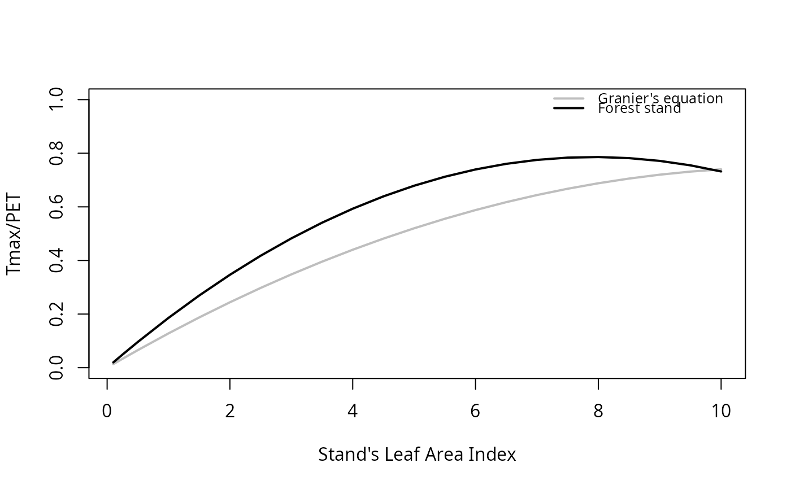

Maximum transpiration vs. LAI
Source:R/transp_maximumTranspirationModel.R
transp_maximumTranspirationModel.RdBuilds a model of maximum transpiration (Tmax) over potential evapotranspiration (PET) for increasing leaf area index (LAI) values for each plant cohort.
Arguments
- x
An object of class
spwbInput, built using the 'Sperry' transpiration mode.- meteo
A data frame with daily meteorological data series.
- latitude
Latitude (in degrees).
- elevation, slope, aspect
Elevation above sea level (in m), slope (in degrees) and aspect (in degrees from North).
- LAI_seq
Sequence of stand LAI values to be tested.
- draw
Logical flag to indicate plotting of results.
Value
Returns a list with as many elements as plant cohorts, each element being a glm model.
Details
This function performs a meta-modelling exercise using the Sperry transpiration model, with the aim to estimate coefficients
for the equation used in the Granier transpiration model (Granier et al. 1999). The model to be fitted is: y ~ a*LAI + b*LAI^2,
where y is the ratio between maximum transpiration (Tmax) and Penman's potential evapotranspiration (PET) and LAI is the stand LAI.
Unlike the original equation of Granier et al. (1999), we fit a zero intercept model so that LAI = 0 translates into zero plant transpiration.
The function fits the model for each cohort separately, assuming it represents the whole stand.
For each stand LAI value in the input sequence, the function uses simulations with Sperry transpiration and the input weather to estimate y = Tmax/PET
as a function of stand's LAI (deciduous stands include leaf phenology).
Once simulations have been conducted for each stand LAI value, the function fits a Generalized Linear Model with the above equation,
assuming a Gamma distribution of residuals and an identity link.
The coefficients of the model can be used to parametrize Granier's transpiration,
since coefficients a and b in the equation above correspond to parameters Tmax_LAI and Tmax_LAIsq,
respectively (see SpParamsMED).
References
Granier A, Bréda N, Biron P, Villette S (1999) A lumped water balance model to evaluate duration and intensity of drought constraints in forest stands. Ecol Modell 116:269–283. https://doi.org/10.1016/S0304-3800(98)00205-1.
Examples
# \donttest{
#Load example daily meteorological data
data(examplemeteo)
# Load example plot plant data
data(exampleforest)
# Load default species parameters
data(SpParamsMED)
# Define soil with default soil params
examplesoil <- defaultSoilParams(4)
# Initialize control parameters for 'Sperry' transpiration mode
control <- defaultControl(transpirationMode="Sperry")
# Initialize input
x2 <- spwbInput(exampleforest,examplesoil, SpParamsMED, control)
# Estimate maximum transpiration ratio models for each cohort
# Weather is subset to speed-up results
m <- transp_maximumTranspirationModel(x2, examplemeteo[1:10,],
41.82592, elevation = 100,
slope = 0, aspect = 0)
#>
|
| | 0%
|
|=== | 5%
|
|====== | 9%
|
|========== | 14%
|
|============= | 18%
|
|================ | 23%
|
|=================== | 27%
|
|====================== | 32%
|
|========================= | 36%
|
|============================= | 41%
|
|================================ | 45%
|
|=================================== | 50%
|
|====================================== | 55%
|
|========================================= | 59%
|
|============================================= | 64%
|
|================================================ | 68%
|
|=================================================== | 73%
|
|====================================================== | 77%
|
|========================================================= | 82%
|
|============================================================ | 86%
|
|================================================================ | 91%
|
|=================================================================== | 95%
|
|======================================================================| 100%

# Inspect the model for first cohort
m[[1]]
#> LAI I(LAI^2)
#> 0.080176935 -0.004116704
# }